Featured
Article Not
Found
What's the Background?
It's a cellular automata. What does it remind you of? The design goal was to create something reminiscent of the constellations, something that would produce plenty of hexagons: nature's most futuristic shape.

Hi! I'm John. My current goal is to become a professional software developer. I graduated from the University of Strathclyde in 2024, achieving a 2:1 Bachelors' in Computer Science. I have experience developing a variety of software, and, as you can see, that includes web development.
Email: johngreggwebster@gmail.com
About This Site
Personal websites are in vogue this millenium, so I just had to get online.
This site's primary purpose is to provide a place to publicise my professional accomplishments,
someday.
At the moment, you can find examples of my work here, as well as on my GitHub (left).
The site was created with just HTML/CSS/JS, no frameworks. The background uses a microservice-based architecture, in order to make it easier to mix-and-match different technologies. This is a portfolio piece, after all, and it's hard to improve by doing the same thing over and over. At the moment, the only service is the API for the blog: C#/Asp.Net, with Entity Framework.
The site's design is supposed to evoke Y2K revival/webcore vibes, as I'm a huge fan of the artistic and musical scene.
Aesthetic cues include skeuomorphism, arcane symbols, and the juxtaposition of organic shapes with clean modernist lines
Unfortunately, it's quite difficult to incorporate that last point into a website. 
No generative AI was used in the development of this site.